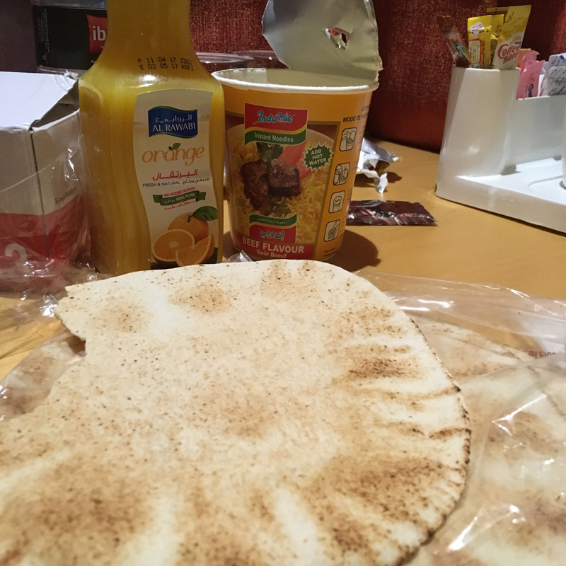
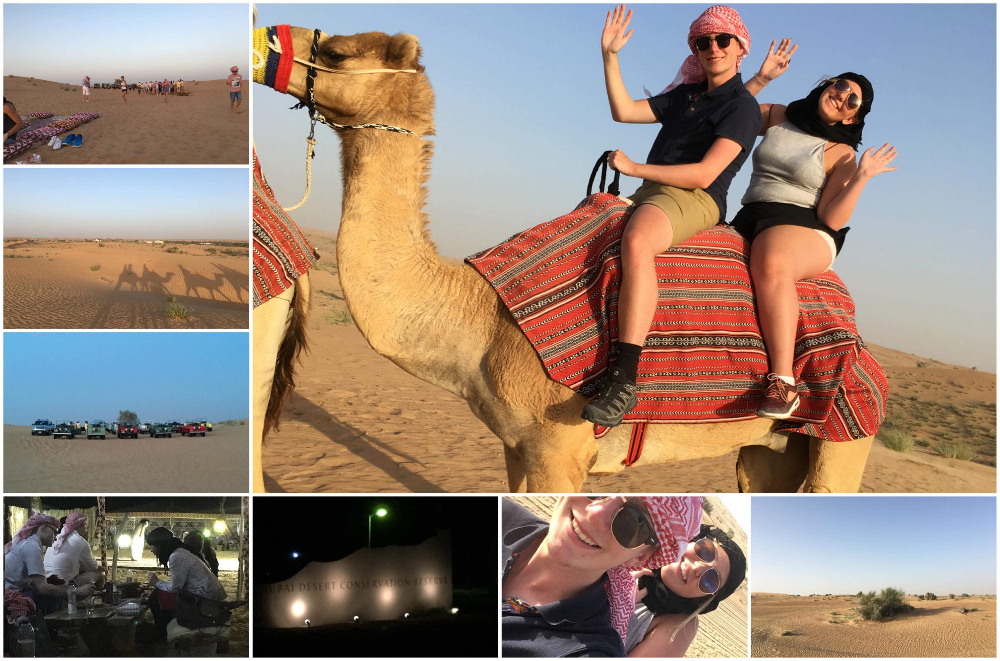
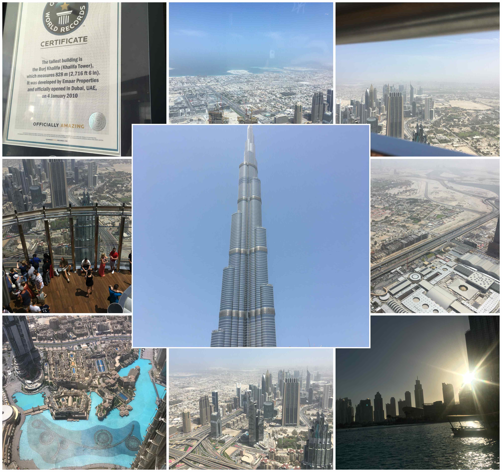

Dubye
I skrivande stund sitter vi på flygplatsen, på ett fik, och inväntar vårt flyg till Jeddah i Saudiarabien. Lite nervös över mellanlandningen där då det är väldigt strikta lagar vad det gäller kvinnor. Men efter mycket googlande så verkar det inte vara ett problem så länge man inte går in i landet. Om man skulle ta sig in i landet som kvinna behöver man slöja och heltäckande klädsel. Men det ska nog gå bra, vi är bara där i 2 timmar sen flyger vi mot Paris!
För att summera Dubai nu när jag har tid över: Tiden har gått otroligt fort här, det har gått en knapp vecka sedan vi landade och nu ska vi redan röra på oss. Det är också dyrt i jämförelse med Singapore, Malaysia, Thailand, till och med Sverige. Men det var inte galet dyrt. Vi har också levt sparsamt när det gäller mat och transport. Till kvällsmat 4 av kvällarna har vi ätit följande: nudlar på burk (trevligt att vattenkokare på rummet är standard), naan-bröd (eller den persiska varianten på det i alla fall), fruktsallad, choklad, och juice. Billigt och tillräckligt mättande för att stå oss på till den svindyra frukosten på Starbucks vi ätit alla dagar vi varit här. Men det har väl varit värt det, hos i kassan där visste vad vi skulle beställa efter några dagar så vi blev väl stammisar där.

Jag tänker nu beskriva den absoluta höjdpunkten på resan: (och jag pratar inte om när vi var uppe i världens högsta byggnad, höhö) Ökensafari med kamelridning!

Vi blev uppringda på hotellrummet klockan 12 och fick tidpunkten vi skulle bli upphämtade på. Klockan 16 ringer det från receptionen och vi blir informerade om att vår skjuts är här. Jag hade ställt telefonen under nattduksbordet för att göra plats för min powerbank, så varje gång det ringde dök jag ner under bordet. Vi gick ner i receptionen och hälsade på vår guide Ali (om jag kommer ihåg rätt) från Kamerun. I minibussen sitter redan en Australiensk kvinna som då är en del av vår grupp. Från vårt blygsamma budgethotell åker vi in mot stadskärnan för att plocka upp de sista medlemmarna av vår grupp, hotellet vi stannar utanför är 5-stjärniga Ritz. Där plockar vi upp en fransk familj bestående av mamma, pappa, och en dotter på kanske 8-10 år. På den 45 minuter långa vägen ut i öknen får vi korta beskrivningar på alla byggnader vi passerar av Ali.
Väl framme mitt ute i ingenstans möts vi av ökenhetta när vi lämnar den luftkonditionerade minibussen. Vi får varsin traditionellt arabiskt huvudbonad, vilket jag personligen tyckte satt väldigt bra och skyddade mot solen. Efter det var det bildtagning framför 1950s Land Rovers. Sen fick vi gå fram till våra kameler och sätta oss. När kamelen reste sig upp fick man luta sig ordentligt bakåt för att inte falla framstupa. Sen travade vi iväg på led med vår grupp bestående av 4 kameler ut i öknen. Det var verkligen mycket roligare än det kanske låter och rekommenderas starkt! Efter kamelturen som varade kanske 40 minuter red vi in i ett litet läger där vi blev serverade äppelcider (alkoholfritt så klart då dem är muslimer) och satte oss på kuddar för att kolla på en falkshow/presentation. Det var mycket fascinerande att lyssna på hur beduinerna fångade och tränade falkar för att jaga. Vi fick även se hur falken Summer försökte fånga ett stycke kött som hennes tränare svingade runt i ett rep. Efter den upplevelsen hade solen gått ned och vi begav oss mot det "autentiska" beduinlägret åkandes i Land Roversarna. Lustigt nog var vårat kamelpaket 50 dirhams billigare än Land Rover-paketet men vi fick ändå åka med dem fram och tillbaka till lägret, så vi fick verkligen hela paketet.
Väl framme i lägret (som tur nog inte var särskilt autentiskt) fick vi arabiskt kaffe när vi kom innanför murarna. Sen fick vi en tur av de olika aktiviteterna som fanns under kvällen. Efter det visades vi till vårt bord, som var i knähöjd, och åt förrätt bestående av linssoppa med citron och arabiskt bröd (som för övrigt smakade väldigt likt knäckebröd). Vi satt och pratade med vår grupp (australiensaren och fransmännen) och lärde känna dem bättre under kvällen, vilket var väldigt trevligt! Sen serverades varmrätten och kocken höll en presentation som jag tyvärr missade då jag sprang på toa. Ja det var helt vanliga toaletter, så äktheten av beduinlägret kan ju bestridas en del.
Huvudrätten bestod av lamm (vilket jag verkligen börjat gilla), kycklingspett, ris, och grönsakssås, för min del. Sen fanns det en hel del andra arabiska rätter som kamelkött på menyn också, men det vågade jag inte testa. Alla vid vårt bord vart proppmätta efter maten då dem inte snålade vid uppläggningen. Vi kollade på två shower under middagen, en show där två män svingade runt (nästan jonglerade) med svärd, och den andra där en kvinna dansade traditionell arabisk dans. Efter huvudrätten gjorde Emma en till henna vilket man kunde göra gratis i ett av tälten. Till sist åt vi efterrätt bestående av frukt och arabiska "donuts" i honung.
Sen tog vi Land Rovern tillbaka till minibussen och begav oss tillbaka in i Dubai. Vi pratade om lite allt möjligt med resten av vår grupp som vi nu lärt känna ganska bra. Dem var/är jättetrevliga så det var verkligen pricken över i:et under kvällen. Verkligen 5/5 stjärnor till Platinum Heritage som organiserade det hela. Även om det inte var billigt direkt så var det värt varenda krona!
Sista dagen
Sista dagen i Dubai spenderades på förmiddagen uppe i Burj Dubai, världens högsta byggnad (dock har jag varit på högre berg så det var inte särskilt farligt). Lite stressigt på morgonen då vi la oss sent efter safarit och hade bokat hissen upp i tornet vid 11. Jag visste inte ens exakt vart vi skulle för att hämta ut våra bokade biljetter. Vi åt vår sedvanliga frukost på Starbucks och tog sedan tåget (3 stationer bort) till Dubai Mall där vi försökte följa skyltarna till "At the top - Burj Dubai". Till slut kom vi dock rätt och kunde hämta ut biljetterna. Det var ingen farlig kö så vi kom upp till 124e våningen på knappt 30 minuter. Väl där njöt vi (eller jag i alla fall, kan nog inte prata för Emma) av utsikten:

Efter höghöjdsäventyret besökte vi Mall of the Emirates och såg inomhusskidbacken dem hade där. På kvällen åkte vi tillbaks till Dubai Mall för att kolla på Dubai Fountain-showen. Fontänen koreograferades till opera och varade i knappa 5 minuter. Det var nästan mer spektakulärt hur många människor som samlats runt den enorma fontänen för att kolla på det hela.
Idag lämnar vi som skrivet Dubai för Paris och har i skrivande stund 8 timmar kvar innan första planet lyfter.